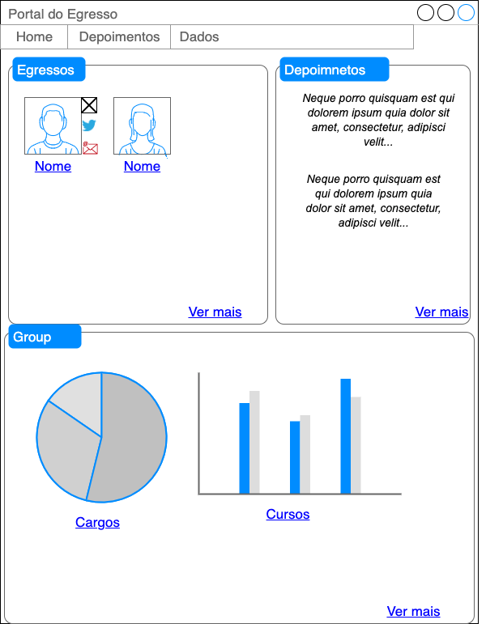
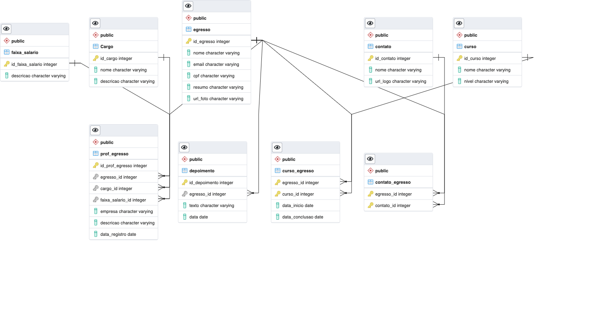

name: inverse class: center, middle, main-title # Projeto Referências para os Labs Laboratório de Programação --- # Ideia > Usar a explanação para construção de um projeto durante os labs --- # Proposta - Portal de Egressos - Manter contato com os discentes que finalizaram o curso de Ciência da Computação - Acompanhar no que estão atuando --- # Funcionalidades esperadas: - Permitir cadastar egresso e manter suas principais informações: - Empresa que trabalha (caso não seja autônomo) - Cargo que atua (dev, analista, ...) - Faixa salarial (uma das opções ...) -- não obrigatória - Curso realizado (Ciência da Computação e Licenciatura em informática - observar que ainda existem os mestrado e doutorado) - Contatos (email, instagram, twiter ...) - Depoimento --- # Funcionalidades esperadas: - Apresentar um painel de egressos - selecionando aleatoriamente os que devem ser exibidos primeiro - permitir consulta - Apresentar depoimentos - Mini relatório histórico de cargos + salário --- # Template Home <center>  </center> --- # Modelo de dados <center>  </center> --- # Escolhas Arquiteturais - Camadas: - divisão de funcionalidades e responsabilidades - manutenção de código - facilidade de mudanças - Orientada a serviços - `backend` gera serviços - consumidos pelo `frontend` --- #Visão Arquitetural <center> <img src="arquitetura.png" width="650"> </center> --- ##Visão `Genérica` Atividades <center> <img src="atividades.png" width="590"> </center>